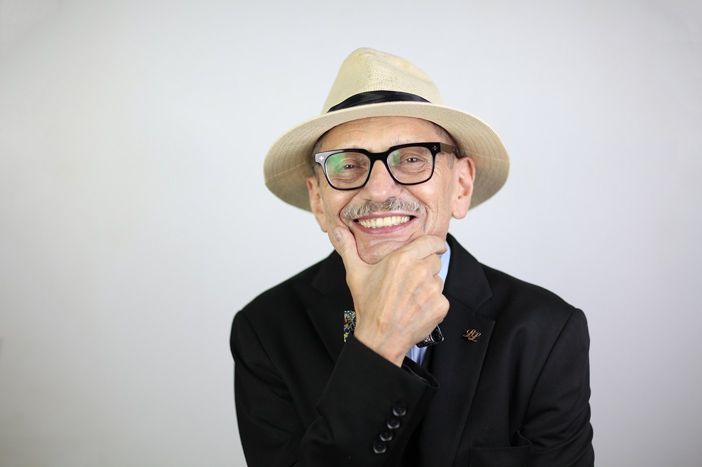
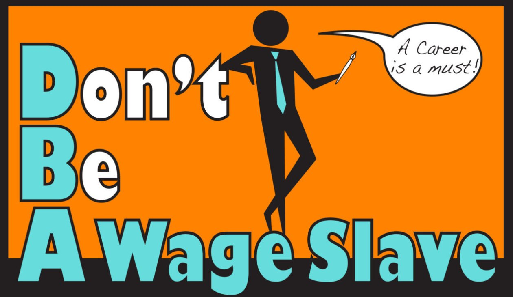
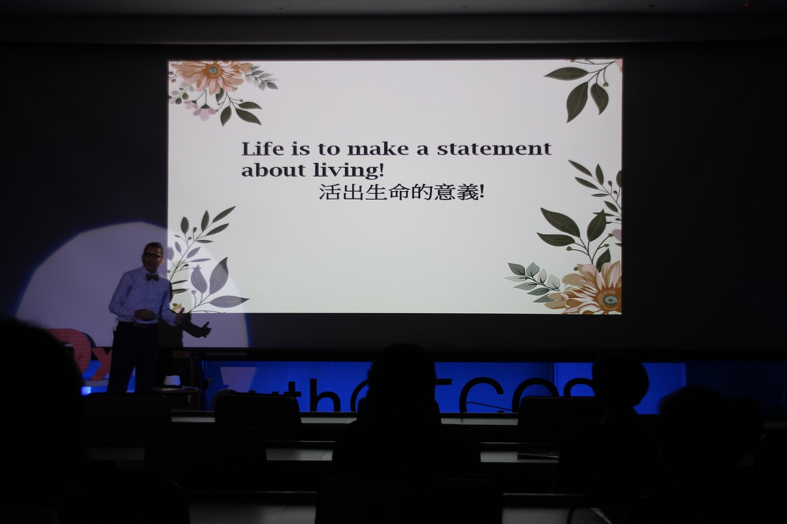

A writer, speaker and teacher whose lifelong subject is human freedom and contentment — Canadian by birth, Taiwanese by choice, internationalist by conviction. A long-time partner of My Culture Connect whose first book the association turned into a bilingual video series.

Leon and My Culture Connect share one conviction: that the point of an education is not a wage, but a free and meaningful life. Leon writes for that idea; MCC teaches for it. His themes — critical thinking, courage, gratitude, purpose — are exactly the values the hub wants to put into a young reader's hands.
Leon 與人師（MCC）共享同一個信念：教育的目的不是一份薪水，而是自由而有意義的人生。Leon 為這個理念書寫，人師為它教學。他筆下的主題——批判思考、勇氣、感恩、使命——正是本資源網想交到年輕讀者手中的價值。
This is not a name on a list. MCC took Leon's first book, Grandfather Is Dead, and built it into a 30-part bilingual video series for English learners — chapter by chapter — published on the association's learning-resources site. A book about freedom became a classroom of free readers.
這不是名單上的一個名字。人師把 Leon 的第一本書《Grandfather Is Dead》，逐章製作成三十集雙語影片，給英語學習者使用，發布在協會的學習資源網站上。一本關於自由的書，化為一間自由閱讀者的教室。
"My interest lies in human freedom and contentment; I encourage people to reflect on their path to success — whatever that entails for each of us. How do we become fulfilled, and what does this mean? To access this happiness, we must make an individual and life-long journey by utilizing critical thinking skills."
Studied in France, Poland, Canada and the United States — with diplomas and degrees in philosophy, education, business and English. 曾於法國、波蘭、加拿大與美國求學，主修哲學、教育、商業與英語。
Canadian by birth, he came to Taiwan to be near his son studying Mandarin — and stayed. 加拿大出生，因兒子來臺學中文而落腳臺灣，從此留下。
For years he has written weekly columns at dbawageslave.com, urging readers to find work they love. 多年來於 dbawageslave.com 撰寫每週專欄，鼓勵讀者找到所愛的志業。
A long-serving bilingual elective teacher — honored by Taichung Girls' Senior High School for years of service to its students. 長期擔任雙語選修教師，曾獲臺中女中頒發感謝狀。
A grandfather's voice, speaking across a lifetime to a young person setting out — thirty pieces of counsel to assemble into a life. 一位祖父跨越一生，對一個正要啟程的年輕人說話——三十則箴言，拼成一個人生。
Thirty short chapters — "thirty pieces to assemble into an idea" — on education, critical thinking, fear, passion, freedom, gratitude and the courage to live an excellent life. The grandfather has died; what remains is his counsel.
三十篇短章——「三十塊拼圖，拼成一個想法」——談教育、批判思考、恐懼、熱情、自由、感恩，以及活出卓越人生的勇氣。祖父已逝，留下的是他的叮嚀。
The companion volume — the grandfather is still here, still speaking. Where the first book is remembrance, the second is the conversation still happening: time, truth, peace and joy, while there is still time to listen.
姊妹作——祖父仍在，仍在說話。如果第一本書是追憶，第二本便是仍在進行的對話：時間、真理、平靜與喜悅，趁還來得及聆聽。

MCC produced a thirty-chapter bilingual reading series of Grandfather Is Dead / 落日餘暉, hosted in the association's English Learning Resources — from "Celebrating graduation day" to "Remembering good counsel," each chapter laid out for Taiwanese learners.
人師為《Grandfather Is Dead／落日餘暉》製作了三十章的雙語閱讀系列，收錄於協會的「英語學習資源」——從〈慶祝畢業日〉到〈記住好的建言〉，每一章都為臺灣學習者鋪陳。
Read the series ↗"Grandfather Is Dead" as a 31-episode podcast — each piece read and unpacked, on health, time, truth, peace and joy. 三十一集的播客，逐篇朗讀與闡釋。
Years of writing at dbawageslave.com on beauty, fear, friends, goals, hope, love, work and freedom. 多年專欄，主題橫跨美、恐懼、友誼、目標、希望、愛、工作與自由。
Took the TEDxYouth@TCGS stage with one charge to young people: "Life is to make a statement about living." 登上 TEDxYouth@TCGS 舞台，告訴年輕人：「活出生命的意義。」
A long-serving elective teacher at Taichung Girls' Senior High, bringing living English into the classroom. 長年於臺中女中兼任雙語選修教師。
His through-line: a fulfilled life is reached by reflection and lifelong learning, not by external success alone. 他的主線：圓滿的人生靠反思與終身學習，而非僅靠外在成就。
"True private liberty" — freedom that is spiritual, emotional and financial — is the question behind everything he makes. 「真正的內在自由」——心靈、情感與財務的自由——是他一切作品背後的提問。

TEDxYouth@TCGS · "Life is to make a statement about living! 活出生命的意義!"
His columns, his podcast, and the bilingual video series of his first book — all in one place. 他的專欄、播客，以及第一本書的雙語影片系列，盡在於此。